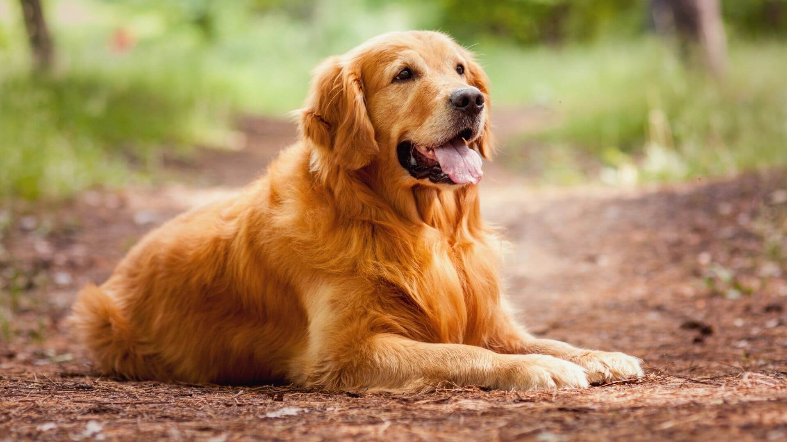
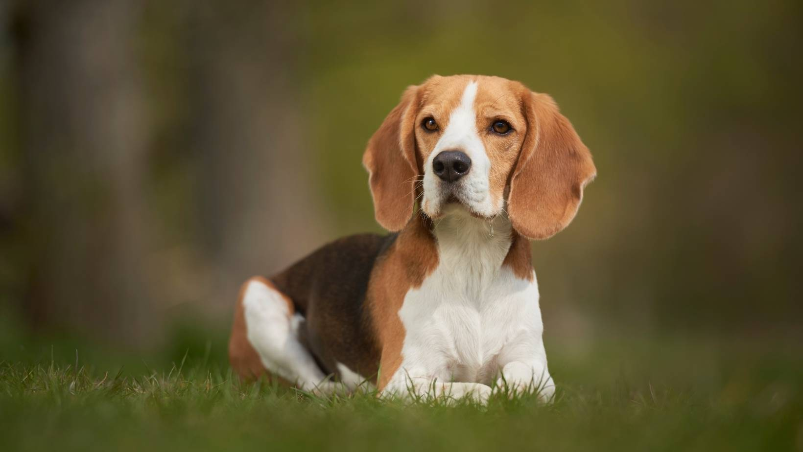
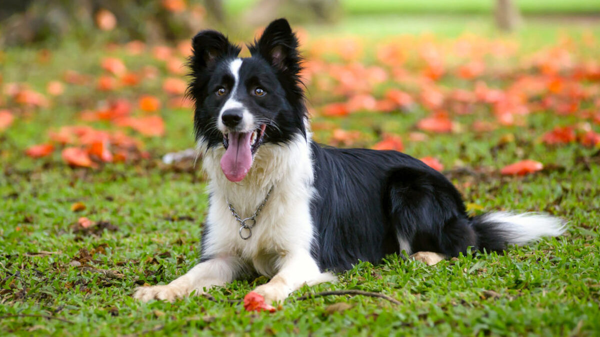

también conocido como ovejero alemán, es una raza de perro pastor originaria de Alemania de tamaño mediano a grande. La raza es relativamente nueva, ya que su origen se remonta a 1899. son a menudo la raza preferida para muchos otros tipos de trabajo, como son: perro policía, perro militar, perro guardián, guía de ciegos, animal de rescate, y otros, según el uso que le den las fuerzas y cuerpos de seguridad y el ejército. En muchos países incluso cuentan con unidades específicas denominadas K-9.

Golden retriever
es una raza de perro cobrador que se desarrolló alrededor de 1850 en el Reino Unido, concretamente en Escocia. Con sus características de perro cobrador, sabueso, bloodhound y spaniel de agua, es un hábil perro de caza con aptitudes para el rastreo. Posee una disposición amigable y una actitud que lo ha convertido en una de las razas familiares más populares
Husky siberiano
es una raza de perro de trabajo originaria del norte de Siberia en Rusia. Este perro fue creado por la tribu Chukchi como perro de trabajo para tirar de los trineos a través de largas distancias durante sus partidas de caza, sirviendo así como vehículo de transporte rápido para las presas en la vuelta al poblado. Debido a las condiciones climáticas de sus tierras natales, su pelaje no solo les servía como protección propia ante tan bajas temperaturas, sino que también les brindó un lugar dentro de las tiendas de la tribu, ayudando a mantener calientes a los niños durante la noche
Rottweiler
es una raza canina de tipo molosoide originaria de Alemania, aunque fue también usado en la antigua Roma. Era conocido como «perro carnicero de Rottweil» porque estaba acostumbrado a proteger y pastorear ganado y tirar de los carritos de carnicería cargados de carne, junto con otros productos para el mercado

Beagle
es una raza de perro de tamaño pequeño a mediano. Tiene un aspecto similar al foxhound, pero de menor tamaño, con patas más cortas y orejas más largas y caídas. Su gran capacidad olfativa e instinto de rastreo hace que se utilicen como perros de detección de importaciones agrícolas prohibidas y productos alimenticios en cuarentena a lo largo de todo el mundo. Son animales inteligentes, y populares como animales domésticos debido a su talla, carácter tranquilo y carencia de problemas de salud congénitos.

Border collie
es una raza de perro de trabajo incluido dentro de la denominación Collie. La raza surgió en la frontera entre Escocia e Inglaterra como perro pastor, sobre todo para trabajar con rebaños de ovejas. El border collie fue seleccionado sobre todo para enfatizar su inteligencia y su obediencia; debido a esto, son uno de los perros pastores más populares en la actualidad.